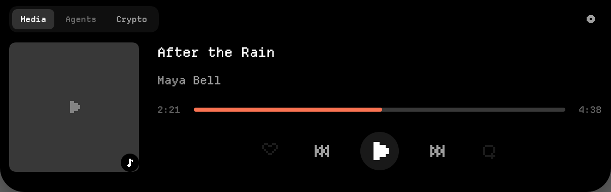
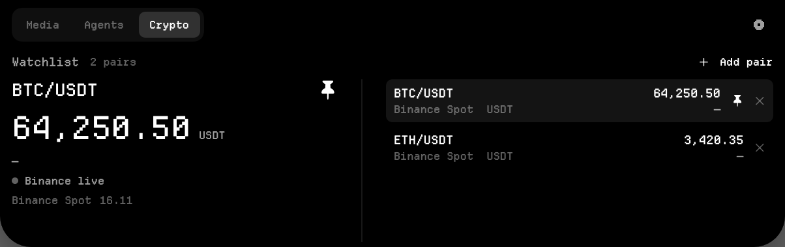
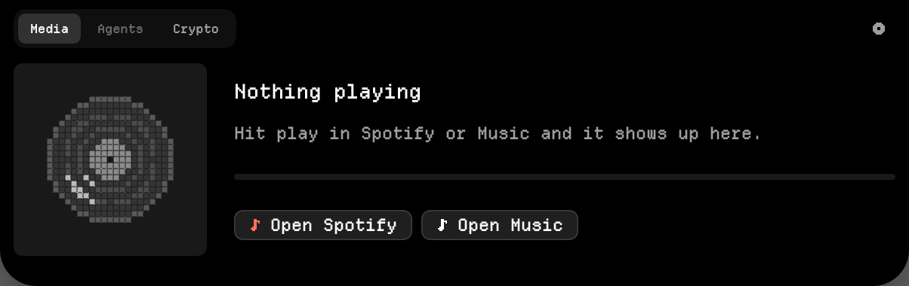
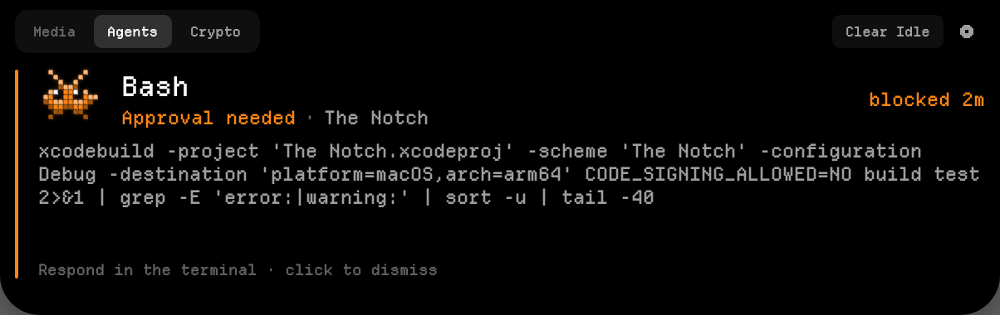
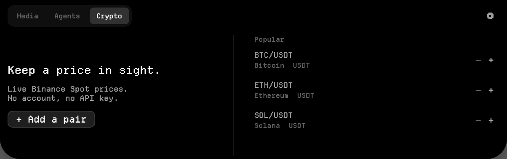
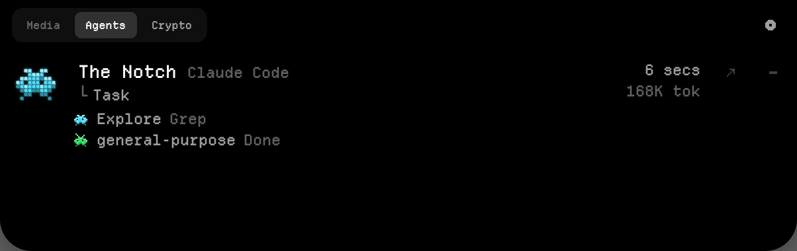
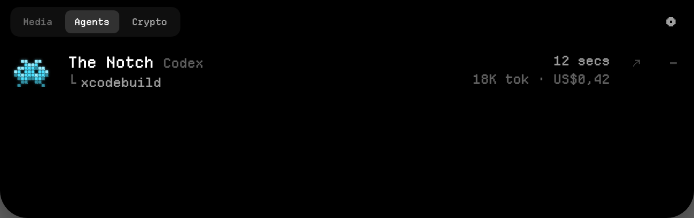

The Notch: UI audit v1
Every state the app can render, reviewed from FrameDump and the live app. These nine things look broken, inconsistent, or out of place. Each one has a proposal that stays inside the current look: Departure Mono, black panel, 8×8 pixel glyphs, colour only for state. Toggle each one between Current and Proposed.
- highSession rows clip at the bottom3+ sessions cut the last row in half
- highPlay & skip glyphs misdrawnplay reads as a flag, skip as a bow-tie
- highCrypto uses SF Symbols + stray dashesthe only non-pixel icons in the app
- midEmpty media shows a dead progress barlooks like a broken player
- mid“Clear Idle” over an approvalan unrelated action above a blocking card
- midTabs look disableddim text reads as “off”, not “nothing happening”
- midCrypto empty: “— +” and misalignmentdash next to plus, halves on different baselines
- lowSubagent line runs together“Explore Grep” reads as one name
- lowUsage column formats disagree“US$0,42” beside “221K ctx”
1 · Session rows clip at the bottom
my-app Claude app
└ Working
api ChatGPT app
└ Waiting for input
The Notch Terminal
└ Waiting for input
my-app Claude app
└ Edit(src/theme.css)
apiWaiting for input · ChatGPT app27s↗–
The NotchIdle · Terminal6m↗–
thesisIdle · VS Code14m↗–
+2 more · scroll
- What's wrong: the panel fits two full rows. The third is cut through its second line by the bottom curve, so it looks like a rendering bug, not something you can scroll.
FrameDumpcan't catch it either, because the overflow path is aScrollView, whichImageRendererdraws as empty. Theexpanded-agentsframe is blank. - Proposal: once there are 3 or more sessions, only the session you last spoke to keeps the full two-line row. The rest become one line each: a small mascot, the project, then state and app, then age. Five sessions fit with no clipping. Anything past that becomes a dim
+N moreline, the same pattern subagents already use. - A session that needs you (approval or question) always gets the full row, wherever it sorts.
2 · Play and skip glyphs are misdrawn

play: current → proposed
skip forward: current → proposed
skip back: current → proposed
pause / play now share a silhouette
- Play steps 2 → 4 → 5 pixels wide, so the triangle has a square shoulder and reads as a flag, or a “P”, in the big round button and on the paused artwork.
- Skip glyphs are hollow triangles, which at 8×8 turn into crossed lines (⋈). Every other control glyph in the app is solid.
- Proposal: a play triangle that grows one pixel per row, and solid double triangles with a bar for skip. Same 8×8 grid, same weight as
pause.
3 · Crypto watchlist: SF Symbols and stray dashes

BTC/USDT · pinned
64,250.50 USDT
▲ 1.84% 24h
Live · Binance Spot · updated 16:11
Watchlist · 2+ Add pair
BTC/USDT
Binance Spot
64,250.50
+1.84%
ETH/USDT
Binance Spot
3,420.35
loading…
- Icons: the pin and the remove × are SF Symbols (
pin.fill,xmark), the only vector icons in an app that is otherwise all 8×8 pixel glyphs. Swap in a pixel pin and the existingPixelGlyph.cross. - Lone dashes: a missing 24h change shows as a bare
–under each price, which reads as a minus sign or a rendering glitch. Showloading…until a quote arrives, then the signed change in up or down colour. - Status line: the dot next to “Binance live” is grey, the colour for not live, and “Binance Spot 16.11” is a bare time with no label. One line instead:
● Live · Binance Spot · updated 16:11. - The big pin beside the pair repeats the one in the list. A dim “· pinned” label carries the same information without a second icon.
4 · Empty media shows a dead progress bar

Nothing playing
Hit play in Spotify or Music and it shows up here.
Open SpotifyOpen Music
- The empty track bar under the copy has nothing to show and no handle, so it reads as a player that failed to load, which undercuts the “nothing is wrong” the spinning record is saying.
- Proposal: drop the bar and let the buttons move up under the copy. The block then sits level with the record, the same way the agents empty state sits beside its mascot.
5 · “Clear Idle” shows above an approval

Bashblocked 2m
Approval needed · The Notch · Terminal
xcodebuild -project 'The Notch.xcodeproj' -scheme 'The Notch' -configuration Debug -destination 'platform=macOS' build test 2>&1 | grep -E 'error:'
↗ Open Terminal to answer · click elsewhere to dismiss
- While a permission card covers the panel, the header still offers Clear Idle, an action on rows you can't see. Swap it for a status line in the approval colour (
1 waiting), or nothing at all. - The footer says “Respond in the terminal” but gives no way to get there. Now that rows know their host app, make that line the ↗ action:
↗ Open Terminal to answer.
6 · Unselected tabs look disabled
- Unselected tabs use two different greys: brighter when that surface has activity, dimmer when it doesn't. The dimmer one reads as disabled, but it still works. “Media” looks switched off whenever nothing is playing.
- Proposal: every unselected tab uses the same secondary grey. Activity becomes a 3px dot after the label, which still says “something is happening there” without suggesting the tab can't be clicked.
7 · Crypto empty state: “— +” and two baselines

Keep a price in sight.
Live Binance Spot prices.
No account, no API key.
+ Add a pair
No account, no API key.
Popular
BTC/USDT
Bitcoin
ETH/USDT
Ethereum
SOL/USDT
Solana
- Each suggestion ends in
— +. The dash is a price placeholder, but next to a plus it reads as remove / add, as if there were a stepper. - The left half is vertically centred and the right is top-aligned, so “Keep a price in sight.” floats below “Popular”. Top-align both, as every other two-column surface does.
- “USDT” is repeated on every row although it's already in the pair name. Drop it.
8 · Subagent lines run together

The Notch Claude app
└ Task · 2 subagents
Explore└ Grep
general-purpose└ Done
- “Explore Grep” and “general-purpose Done” read as one name each. Reuse the parent row's
└continuation mark between the subagent and its tool, so a subagent line reads like a smaller copy of a session line. - The parent's continuation says only
Task. Adding the count (Task · 2 subagents) explains why lines are hanging under it.
9 · Usage column formats disagree

The Notch Codex
└ xcodebuild
my-app Terminal
└ Idle
- Cost is formatted with the system locale's currency style. On a machine set to a comma-decimal region it renders
US$0,42next to18K tokand221K ctx, which use English number formatting. Use a fixed$0.42so the whole column is one style. - The timestamp uses SwiftUI's long relative style (
6 min, 11 secs), which pushes the column wide and ticks every second. A short form (12s,6m,2h) matches theblocked 2mthe approval card already uses.